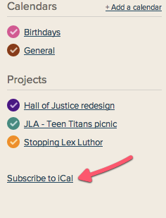
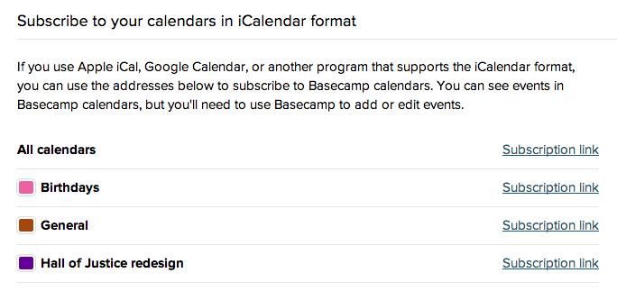
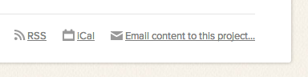

Adding your Basecamp calendar to an external calendar
If you've already got a calendar program, you don't have to change everything over to the Basecamp Calendar. With iCal feeds, you can add your Basecamp events and to-dos to almost any calendar program, including Outlook, iCal, and Google Calendar.
It's not a true sync: you can pull your Basecamp calendar into your external calendar, but not vice-versa. There's no way to pull a feed into Basecamp – only to add your Basecamp feed to outside calendars.
At the bottom of your calendar list, click "Subscribe to iCal"

You can subscribe to all calendars or just a few in particular. Click the "Subscription link" to open up your calendar program and subscribe to that calendar.

If you're using a web calendar, like Google, right click and copy this link instead, then add it to your Google Calendar. Watch a video on how to do this.
Your calendar program or service might only check the iCalendar feed every 30 minutes or some times even only once per day. It depends on the calendar and the settings. But if you don’t see changes showing up immediately, this is why.
You can also get the subscription link for an individual project at the bottom of the project page.
